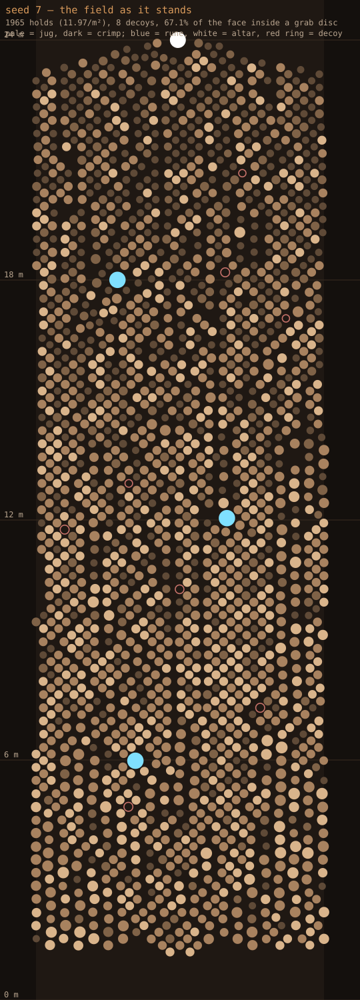
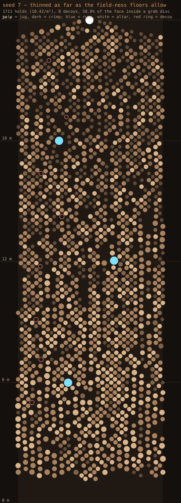

Seed 7, the same 7.2 m width, x across the face and y up the 24 m climb. Every dot is a hold at its true size. Both are fully connected on every seed and the bot tops out both with zero falls.

A bouldering-gym wall — rock nearly everywhere.

A little more bare wall between rocks. Every hold still has at least two ways up. Going much sparser means dead-end holds, which the route's guarantee forbids.